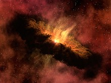
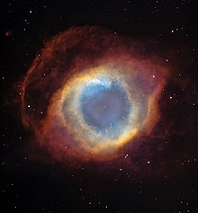
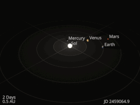
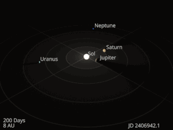

There is evidence that man had shown an interest in knowing about them since acient times. At present, man can explore more than what is visible to the naked eye, as scientist have invented modern equipments to observe the sky.
It has been discovered that there are eight planet, shapeless pieces of planets called asteroids, various celestial bodies such as dwarf planets and natural salellites revolving around the sun. When all these things are taken together, we consider it as a system. This ia called solar system. It is believed that the solar system has been formed 4600 million years ago, by combining dust particals and gases together. When we observe the night sky with our naked eye we can see a multipule of stars. Stars are celesial bodies that emit light and heat. Thus, they are soures of energy. They can be seen shining or twinkling in the night sky.
The sun and the other celestial bodies which are bound by the gravitational force of the sun belongs to the solar system
1. The Sun, main body of the solar system
2. Planets, largest celestial bodies
3. Smaller planets or drawf planets
4. Natural Satelliteis of the planets
5. Milloins of other rocks praticals or debis
The Solar System formed 4.568 billion years ago from the gravitational collapse of a region within a large molecular cloud. This initial cloud was likely several light-years across and probably birthed several stars. As is typical of molecular clouds, this one consisted mostly of hydrogen, with some helium, and small amounts of heavier elements fused by previous generations of stars. As the region that would become the Solar System, known as the pre-solar nebula, collapsed, conservation of angular momentum caused it to rotate faster. The centre, where most of the mass collected, became increasingly hotter than the surrounding disc. As the contracting nebula rotated faster, it began to flatten into a protoplanetary disc with a diameter of roughly 200 AU (30 billion km; 19 billion mi) and a hot, dense protostar at the centre. The planets formed by accretion from this disc, in which dust and gas gravitationally attracted each other, coalescing to form ever larger bodies. Hundreds of protoplanets may have existed in the early Solar System, but they either merged or were destroyed or ejected, leaving the planets, dwarf planets, and leftover minor bodies.
Due to their higher boiling points, only metals and silicates could exist in solid form in the warm inner Solar System close to the Sun, and these would eventually form the rocky planets of Mercury, Venus, Earth, and Mars. Because metallic elements only comprised a very small fraction of the solar nebula, the terrestrial planets could not grow very large. The giant planets (Jupiter, Saturn, Uranus, and Neptune) formed further out, beyond the frost line, the point between the orbits of Mars and Jupiter where material is cool enough for volatile icy compounds to remain solid. The ices that formed these planets were more plentiful than the metals and silicates that formed he terrestrial inner planets, allowing them to grow massive enough to capture large atmospheres of hydrogen and helium, the lightest and most abundant elements. Leftover debris that never became planets congregated in regions such as the asteroid belt, Kuiper belt, and Oort cloud. The Nice model is an explanation for the creation of these regions and how the outer planets could have formed in different positions and migrated to their current orbits through various gravitational interactions. 
Within 50 million years, the pressure and density of hydrogen in the centre of the protostar became great enough for it to begin thermonuclear fusion. The temperature, reaction rate, pressure, and density increased until hydrostatic equilibrium was achieved: the thermal pressure counterbalancing the force of gravity. At this point, the Sun became a main-sequence star. The main-sequence phase, from beginning to end, will last about 10 billion years for the Sun compared to around two billion years for all other phases of the Sun's pre-remnant life combined. Solar wind from the Sun created the heliosphere and swept away the remaining gas and dust from the protoplanetary disc into interstellar space. As helium accumulates at its core the Sun is growing brighter; early in its main-sequence life its brightness was 70% that of what it is today.
The Solar System will remain roughly as it is known today until the hydrogen in the core of the Sun has been entirely converted to helium, which will occur roughly 5 billion years from now. This will mark the end of the Sun's main-sequence life. At that time, the core of the Sun will contract with hydrogen fusion occurring along a shell surrounding the inert helium, and the energy output will be greater than at present. The outer layers of the Sun will expand to roughly 260 times its current diameter, and the Sun will become a red giant. Because of its increased surface area, the surface of the Sun will be cooler (2,600 K (2,330 °C; 4,220 °F) at its coolest) than it is on the main sequence.
The expanding Sun is expected to vaporize Mercury as well as Venus, and render Earth uninhabitable (possibly destroying it as well). Eventually, the core will be hot enough for helium fusion; the Sun will burn helium for a fraction of the time it burned hydrogen in the core. The Sun is not massive enough to commence the fusion of heavier elements, and nuclear reactions in the core will dwindle. Its outer layers will be ejected into space, leaving behind a dense white dwarf, half the original mass of the Sun but only the size of Earth. The ejected outer layers will form what is known as a planetary nebula, returning some of the material that formed the Sun—but now enriched with heavier elements like carbon—to the interstellar medium 
The planets and other large objects in orbit around the Sun lie near the plane of Earth's orbit, known as the ecliptic. Smaller icy objects such as comets frequently orbit at significantly greater angles to this plane. Most of the planets in the Solar System have secondary systems of their own, being orbited by natural satellites called moons. Many of the largest natural satellites are in synchronous rotation, with one face permanently turned toward their parent. The four giant planets have planetary rings, thin bands of tiny particles that orbit them in unison.
As a result of the formation of the Solar System, planets and most other objects orbit the Sun in the same direction that the Sun is rotating. That is, counter-clockwise, as viewed from above Earth's north pole. There are exceptions, such as Halley's Comet. Most of the larger moons orbit their planets in prograde direction, matching the planetary rotation; Neptune's moon Triton is the largest to orbit in the opposite, retrograde manner. Most larger objects rotate around their own axes in the prograde direction relative to their orbit, though the rotation of Venus is retrograde.
To a good first approximation, Kepler's laws of planetary motion describe the orbits of objects about the Sun.: 433–437 These laws stipulate that each object travels along an ellipse with the Sun at one focus, which causes the body's distance from the Sun to vary over the course of its year. A body's closest approach to the Sun is its perihelion, whereas its most distant point from the Sun is called its aphelion.: 9-6 The orbits of the planets are nearly circular, but many comets, asteroids, and Kuiper belt objects follow highly elliptical orbits. Kepler's laws only account for the influence of the Sun's gravity upon an orbiting body, not the gravitational pulls of different bodies upon each other. On a human time scale, these additional perturbations can be accounted for using numerical models,: 9-6 but the planetary system can change chaotically over billions of years.
The angular momentum of the Solar System is a measure of the total amount of orbital and rotational momentum possessed by all its moving components. Although the Sun dominates the system by mass, it accounts for only about 2% of the angular momentum. The planets, dominated by Jupiter, account for most of the rest of the angular momentum due to the combination of their mass, orbit, and distance from the Sun, with a possibly significant contribution from comets.
 The astronomical unit (150,000,000 km; 93,000,000 mi) would be the distance from the Earth to the Sun if the planet's orbit were perfectly circular. For comparison, the radius of the Sun is 0.0047 AU (700,000 km; 400,000 mi). Thus, the Sun occupies 0.00001% (10−5 %) of the volume of a sphere with a radius the size of Earth's orbit, whereas Earth's volume is roughly one millionth (10−6)that of the Sun. Jupiter, the largest planet, is 5.2 astronomical units (780,000,000 km; 480,000,000 mi) from the Sun and has a radius of 71,000 km (0.00047 AU; 44,000 mi), whereas the most distant planet, Neptune, is 30 AU (4.5×109 km; 2.8×109 mi) from the Sun.
With a few exceptions, the farther a planet or belt is from the Sun, the larger the distance between its orbit and the orbit of the next nearer object to the Sun. For example, Venus is approximately 0.33 AU farther out from the Sun than Mercury, whereas Saturn is 4.3 AU out from Jupiter, and Neptune lies 10.5 AU out from Uranus. Attempts have been made to determine a relationship between these orbital distances, like the Titius–Bode law and Johannes Kepler's model based on the Platonic solids, but ongoing discoveries have invalidated these hypotheses.
Some Solar System models attempt to convey the relative scales involved in the Solar System on human terms. Some are small in scale (and may be mechanical—called orreries)—whereas others extend across cities or regional areas. The largest such scale model, the Sweden Solar System, uses the 110-metre (361 ft) Avicii Arena in Stockholm as its substitute Sun, and, following the scale, Jupiter is a 7.5-metre (25-foot) sphere at Stockholm Arlanda Airport, 40 km (25 mi) away, whereas the farthest current object, Sedna, is a 10 cm (4 in) sphere in Luleå, 912 km (567 mi) away.
If the Sun–Neptune distance is scaled to 100 metres (330 ft), then the Sun would be about 3 cm (1.2 in) in diameter (roughly two-thirds the diameter of a golf ball), the giant planets would be all smaller than about 3 mm (0.12 in), and Earth's diameter along with that of the other terrestrial planets would be smaller than a flea (0.3 mm or 0.012 in) at this scale
The inner Solar System is the region comprising the terrestrial planets and the asteroid belt. Composed mainly of silicates and metals, the objects of the inner Solar System are relatively close to the Sun; the radius of this entire region is less than the distance between the orbits of Jupiter and Saturn. This region is also within the frost line, which is a little less than 5 AU (750 million km; 460 million mi) from the Sun
The four terrestrial or inner planets have dense, rocky compositions, few or no moons, and no ring systems. They are composed largely of refractory minerals such as the silicates—which form their crusts and mantles—and metals such as iron and nickel which form their cores. Three of the four inner planets (Venus, Earth and Mars) have atmospheres substantial enough to generate weather; all have impact craters and tectonic surface features, such as rift valleys and volcanoes. The term inner planet should not be confused with inferior planet, which designates those planets that are closer to the Sun than Earth is (i.e. Mercury and Venus).
Mercury (0.4 AU (60 million km; 37 million mi) from the Sun) is the closest planet to the Sun. The smallest planet in the Solar System (0.055 MEarth), Mercury has no natural satellites. The dominant geological features are impact craters or basins with ejecta blankets, the remains of early volcanic activity including magma flows, and lobed ridges or rupes that were probably produced by a period of contraction early in the planet's history. Mercury's very tenuous atmosphere consists of solar-wind particles trapped by Mercury's magnetic field, as well as atoms blasted off its surface by the solar wind. Its relatively large iron core and thin mantle have not yet been adequately explained. Hypotheses include that its outer layers were stripped off by a giant impact, or that it was prevented from fully accreting by the young Sun's energy
Venus (0.7 AU (100 million km; 65 million mi) from the Sun) is close in size to Earth (0.815 MEarth) and, like Earth, has a thick silicate mantle around an iron core, a substantial atmosphere, and evidence of internal geological activity. It is much drier than Earth, and its atmosphere is ninety times as dense. Venus has no natural satellites. It is the hottest planet, with surface temperatures over 400 °C (752 °F), mainly due to the amount of greenhouse gases in the atmosphere. The planet has no magnetic field that would prevent depletion of its substantial atmosphere, which suggests that its atmosphere is being replenished by volcanic eruptions. A relatively young planetary surface displays extensive evidence of volcanic activity, but is devoid of plate tectonics. It may undergo resurfacing episodes on a time scale of 700 million years.
Earth (1 AU (150 million km; 93 million mi) from the Sun) is the largest and densest of the inner planets, the only one known to have current geological activity, and the only place where life is known to exist. Its liquid hydrosphere is unique among the terrestrial planets, and it is the only planet where plate tectonics has been observed. Earth's atmosphere is radically different from those of the other planets, having been altered by the presence of life to contain 21% free oxygen. The planetary magnetosphere shields the surface from solar and cosmic radiation, limiting atmospheric stripping and maintaining habitability. It has one natural satellite, the Moon, the only large satellite of a terrestrial planet in the Solar System
Mars(1.5 AU (220 million km; 140 million mi) from the Sun) is smaller than Earth and Venus (0.107 MEarth). It has an atmosphere of mostly carbon dioxide with a surface pressure of 6.1 millibars (0.088 psi; 0.18 inHg); roughly 0.6% of that of Earth but sufficient to support weather phenomena. Its surface, peppered with volcanoes, such as Olympus Mons, and rift valleys, such as Valles Marineris, shows geological activity that may have persisted until as recently as 2 million years ago. Its red colour comes from iron oxide (rust) in its soil. Mars has two tiny natural satellites (Deimos and Phobos) thought to be either captured asteroids, or ejected debris from a massive impact early in Mars's history
Asteroids except for the largest, Ceres, are classified as small Solar System bodie and are composed mainly of refractory rocky and metallic minerals, with some ice. They range from a few metres to hundreds of kilometres in size. Asteroids smaller than one meter are usually called meteoroids and micrometeoroids (grain-sized), with the exact division between the two categories being debated over the years. As of 2017, the IAU designates asteroids having diameter between about 30 micrometres and 1 metre as micrometeroids, and terms smaller particles "dust".
The asteroid belt occupies the orbit between Mars and Jupiter, between 2.3 and 3.3 AU (340 and 490 million km; 210 and 310 million mi) from the Sun. It is thought to be remnants from the Solar System's formation that failed to coalesce because of the gravitational interference of Jupiter. The asteroid belt contains tens of thousands, possibly millions, of objects over one kilometre in diameter. Despite this, the total mass of the asteroid belt is unlikely to be more than a thousandth of that of Earth. The asteroid belt is very sparsely populated; spacecraft routinely pass through without incident
The outer region of the Solar System is home to the giant planets and their large moons. The centaurs and many short-period comets also orbit in this region. Due to their greater distance from the Sun, the solid objects in the outer Solar System contain a higher proportion of volatiles, such as water, ammonia, and methane than those of the inner Solar System because the lower temperatures allow these compounds to remain solid
The four outer planets, also called giant planets or Jovian planets, collectively make up 99% of the mass known to orbit the Sun. Jupiter and Saturn are together more than 400 times the mass of Earth and consist overwhelmingly of the gases hydrogen and helium, hence their designation as gas giants. Uranus and Neptune are far less massive—less than 20 Earth masses (MEarth) each—and are composed primarily of ices. For these reasons, some astronomers suggest they belong in their own category, ice giants. All four giant planets have rings, although only Saturn's ring system is easily observed from Earth. The term superior planet designates planets outside Earth's orbit and thus includes both the outer planets and Mars.
The ring–moon systems of Jupiter, Saturn, and Uranus are like miniature versions of the Solar System; that of Neptune is significantly different, having been disrupted by the capture of its largest moon Triton.
Jupiter (5.2 AU (780 million km; 480 million mi) from the Sun), at 318 MEarth, is 2.5 times the mass of all the other planets put together. It is composed largely of hydrogen and helium. Jupiter's strong internal heat creates semi-permanent features in its atmosphere, such as cloud bands and the Great Red Spot. The planet possesses a 4.2–14 Gauss strength magnetosphere that spans 22–29 million km, making it, in certain respects, the largest object in the Solar System. Jupiter has 80 known satellites. The four largest, Ganymede, Callisto, Io, and Europa, are called the Galilean moons: they show similarities to the terrestrial planets, such as volcanism and internal heating. Ganymede, the largest satellite in the Solar System, is larger than Mercury; Callisto is almost as large.
Saturn (9.5 AU (1.42 billion km; 880 million mi) from the Sun), distinguished by its extensive ring system, has several similarities to Jupiter, such as its atmospheric composition and magnetosphere. Although Saturn has 60% of Jupiter's volume, it is less than a third as massive, at 95 MEarth. Saturn is the only planet of the Solar System that is less dense than water. The rings of Saturn are made up of small ice and rock particles. Saturn has 83 confirmed satellites composed largely of ice. Two of these, Titan and Enceladus, show signs of geological activity; they, as well as five other Saturnian moons (Iapetus, Rhea, Dione, Tethys, and Mimas), are large enough to be round. Titan, the second-largest moon in the Solar System, is bigger than Mercury and the only satellite in the Solar System to have a substantial atmosphere.
Uranus (19.2 AU (2.87 billion km; 1.78 billion mi) from the Sun), at 14 MEarth, has the lowest mass of the outer planets. Uniquely among the planets, it orbits the Sun on its side; its axial tilt is over ninety degrees to the ecliptic. This gives the planet extreme seasonal variation as each pole points toward and then away from the Sun. It has a much colder core than the other giant planets and radiates very little heat into space. As a consequence, it has the coldest planetary atmosphere in the Solar System. Uranus has 27 known satellites, the largest ones being Titania, Oberon, Umbriel, Ariel, and Miranda. Like the other giant planets, it possesses a ring system and magnetosphere
Neptune (30.1 AU (4.50 billion km; 2.80 billion mi) from the Sun), though slightly smaller than Uranus, is more massive (17 MEarth) and hence more dense. It radiates more internal heat than Uranus, but not as much as Jupiter or Saturn. Neptune has 14 known satellites. The largest, Triton, is geologically active, with geysers of liquid nitrogen. Triton is the only large satellite with a retrograde orbit, which indicates that it did not form with Neptune, but was probably captured from the Kuiper belt. Neptune is accompanied in its orbit by several minor planets, termed Neptune trojans, that either lead or trail the planet by about one-sixth of the way around the Sun, positions known as Lagrange points.